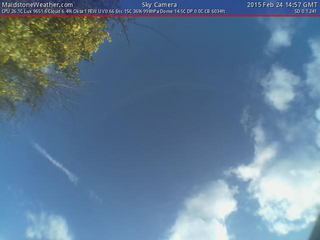
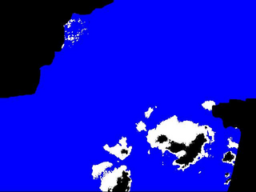

When capturing a view of the sky, it's possible during daylight hours to calculate the amount of cloud currently present in the sky from an image. How this is done is covered elsewhere within this documentation.
The following image shows the sky conditions for 2015 Feb 24 at 14:57 GMT and the calculated cloud cover at that moment. This was taken with the original setup with the original V1 PI camera.
 
The following video was from a test made on January 11, 2023 for a 3-hour period. This was using a PI HQ camera with a wide angle camera.
Here you can see what you can expect when creating timelapses including data from the station as well as Keogram's showing the sky conditions throughout the day.